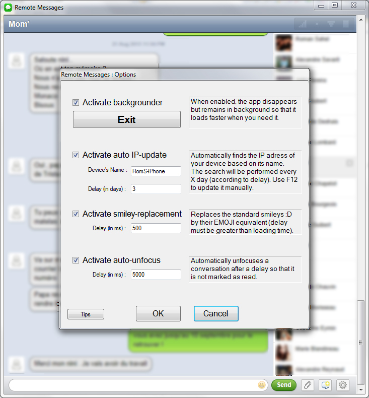
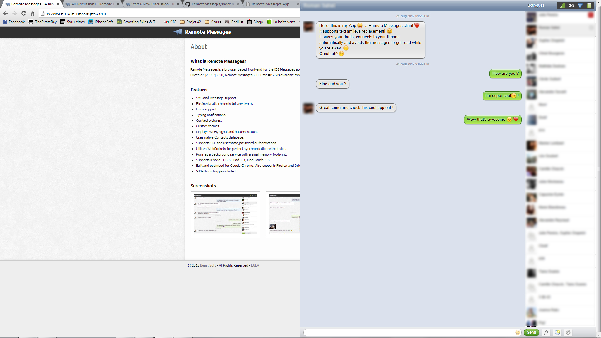
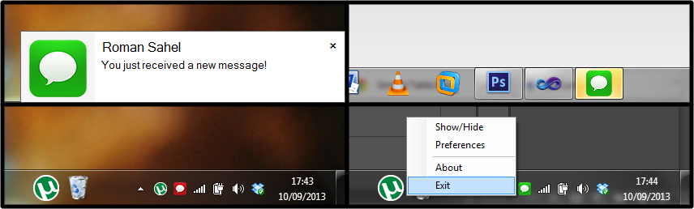

What is Remote Client?
Remote Client is a standalone application bringing some more features to the already awesome Remote Messages. This is a personal project shared here for those interested. If you have any constructive comment, suggestion, request, please check this link.
Features:
- Automatic detection of the device’s IP address.
If you’re not always on the same Wi-Fi, you must always check and change your IP which can become laborious. The App does this for you: just save your device’s name and it finds your IP.
- Drafts.
Sometimes, you’re writing a message but you receive another one that needs to be quickly answered: drafts are the solution. Just switch conversation, send your text, and go back: your previously began message has been saved and you can continue writing it.
- Replaces text smileys by their EMOJI equivalent.
Some of your contacts might not have an iPhone and send you text emoticons such as “:)”, “:(“. Just like in BiteSMS, these are replaced by their corresponding Emoji.
- Automatic Unfocus of a conversation.
You might have let your browser opened on your computer and then forgot it so that some messages got read and you never answered it. The App automatically unfocuses a conversation after a certain delay (determined by you) so that this does not happen anymore.
- Half-screen mode.
No address bar, no title bar, just your messages.
- Notifications.
Nobody likes to keep people waiting: when you get a message while the app is not visible, the icon will be flashing and a tooltip will appear.
- Backgrounding and Notify Icon.
When you close the app, it remains in background so that you can still be warned when you get a new message and go back to your messages instantly. An icon is displayed the notification area (at the right-bottom) allowing you to show the app or exit it.
- Shortcuts.
Typing on your computer rather than on your phone is more comfortable but also faster, uh? Well, be even more efficient with shortcuts to change conversation, send messages, etc.
Press F1 to display options and help.
Screenshots:
  Features to come:
Notifications (with sound – volume, choice), embedded Image Viewer.
=======Features to come:
Suggestion are welcomed!
Thanks for reading.